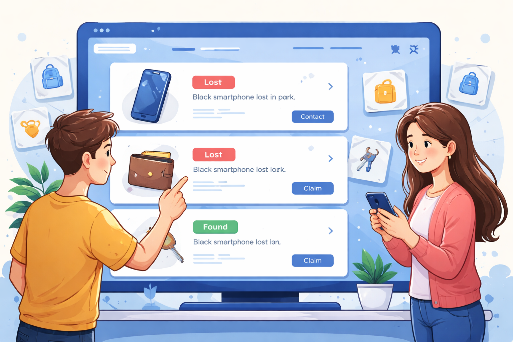

How It Works
1. Report
Submit details about a lost or found item.

2. Display
Your item appears on the board.

3. Connect
People can contact you to return items.

About Us
This platform helps people recover lost items quickly and safely within their community.
Learn more